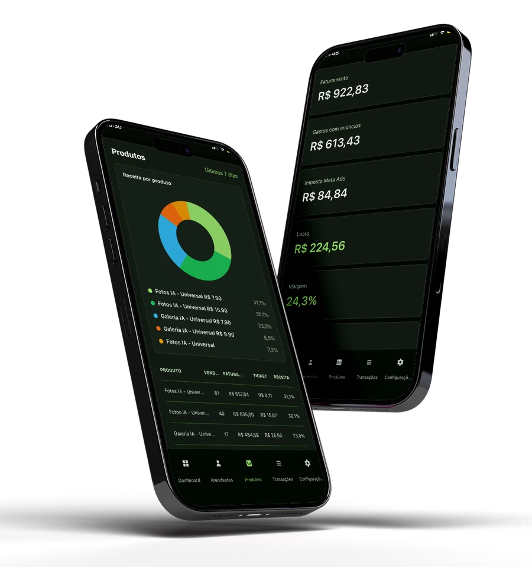

Dashboard
Hoje
FaturamentoR$ 1.991
LucroR$ 1.264
ROI2,74
Vendas39
Para quem vende pelo WhatsApp, recebe no Pix, usa checkout ou manda vendas por webhook: veja se o dinheiro que entra paga tráfego, imposto, produto e equipe antes de escalar.

Registre vendas por Pix em segundos ou receba tudo por webhook. O HS Metrics cruza faturamento, gasto real com anúncios, imposto do Meta Ads, produtos e equipe para mostrar se a operação está saudável.
O HS Metrics considera o imposto do Meta Ads para mostrar lucro, margem, CPA e ROI mais condizentes com a realidade.
Sem enxergar o imposto, a pessoa pode escalar achando que está ganhando dinheiro enquanto está perdendo.
Para operações simples, você registra a venda direto no app e o painel atualiza na hora.
Receba vendas automaticamente por webhook de Zapdata, automações próprias ou qualquer ferramenta que envie JSON.
Hotmart, Kiwify, Cakto, Eduzz ou outros gateways podem alimentar o painel por webhook.
Veja quais horários do dia mais vendem e coloque orçamento onde a conversão já mostrou força.
Receba vendas por webhook ou registre vendas manuais e cruze tudo com seus gastos de tráfego.
O gráfico por horário mostra o acumulado de vendas ao longo do dia. Em períodos maiores, ele revela os horários que costumam performar melhor para você subir orçamento com mais confiança.
Veja o desempenho de cada atendente, acompanhe metas, comissões, fixo e vendas registradas. Tudo dentro do mesmo painel de lucro.
Faltam R$ 1.840,00 para bater a meta.
O HS Metrics mostra vendas, lucro e pontos de atenção para você acompanhar a operação onde quer que esteja.

Todos os planos incluem dashboard de lucro, registro de vendas, webhooks, integração com Meta Ads, relatório de produtos e notificações de venda.
Para quem está validando a operação e quer sair da planilha.
Para quem já vende todos os dias e precisa acompanhar tráfego, vendas e lucro com clareza.
Para operações com maior volume, múltiplas contas e mais dados para acompanhar.
Use o HS Metrics na sua operação, acompanhe suas vendas e veja seu lucro real. Se não fizer sentido para você, é só chamar no WhatsApp dentro de 7 dias e pedir o reembolso.
Não. Você pode registrar vendas manualmente ou conectar qualquer ferramenta que envie vendas por webhook.
Sim. A ideia é receber as vendas por webhook e transformar esses dados em métricas de lucro, produto, origem e horário.
Sim. Você pode registrar a venda no app ou enviar a venda por webhook da sua automação.
Sim. Nos planos Pro e Scale você pode acompanhar atendentes, metas, comissões, fixo e desempenho por pessoa.
Porque o gasto que aparece no gerenciador pode ser menor que o valor cobrado no cartão. O HS Metrics considera esse imposto para mostrar um lucro mais condizente com a realidade.
Se sua operação crescer, você pode mudar para o próximo plano. Para volumes acima de 10.000 vendas por mês, fale com a gente para um plano personalizado.
Não usamos teste grátis sem pagamento. Você começa normalmente e tem 7 dias de garantia. Se a plataforma não fizer sentido para sua operação, pode pedir reembolso pelo WhatsApp dentro desse prazo.
Sim. O HS Metrics será um PWA, então você poderá adicionar à tela inicial e usar como app.